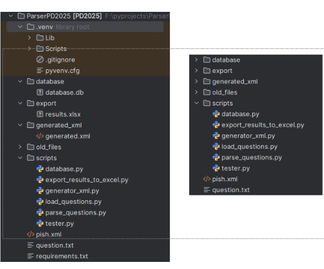
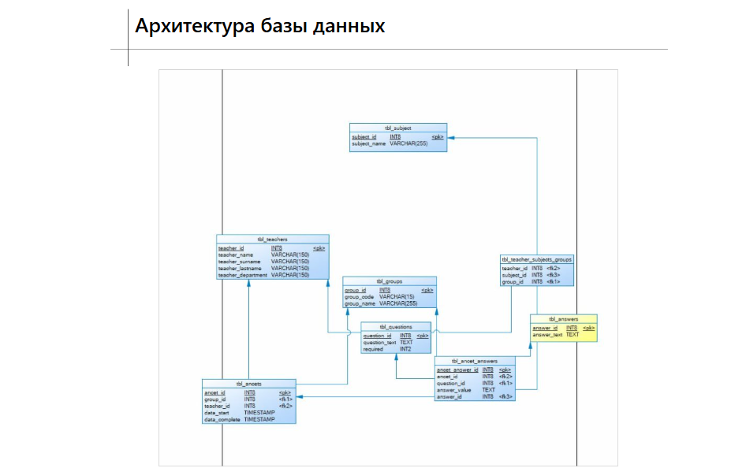
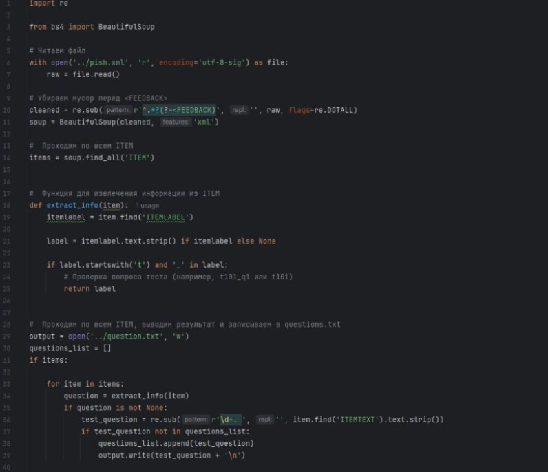
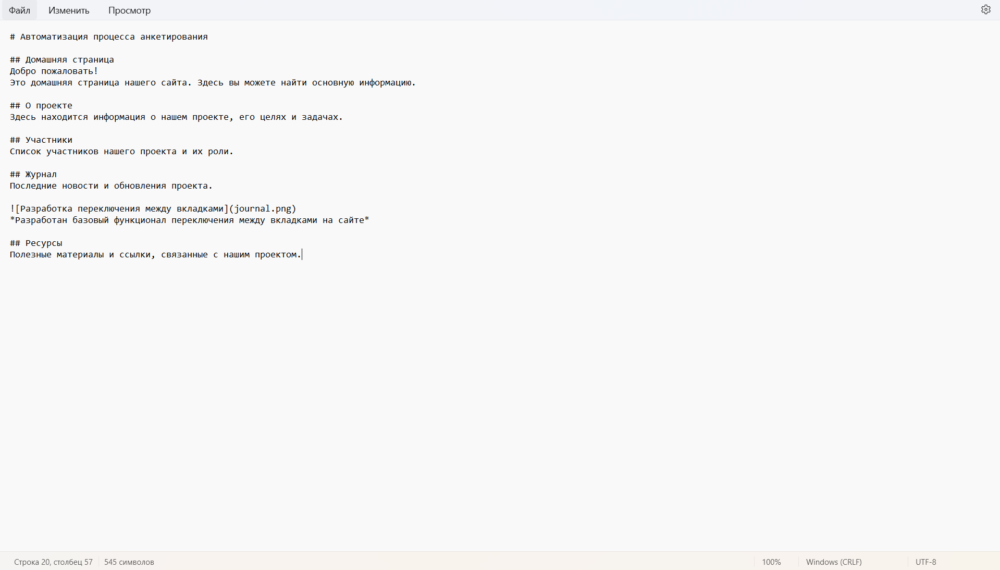
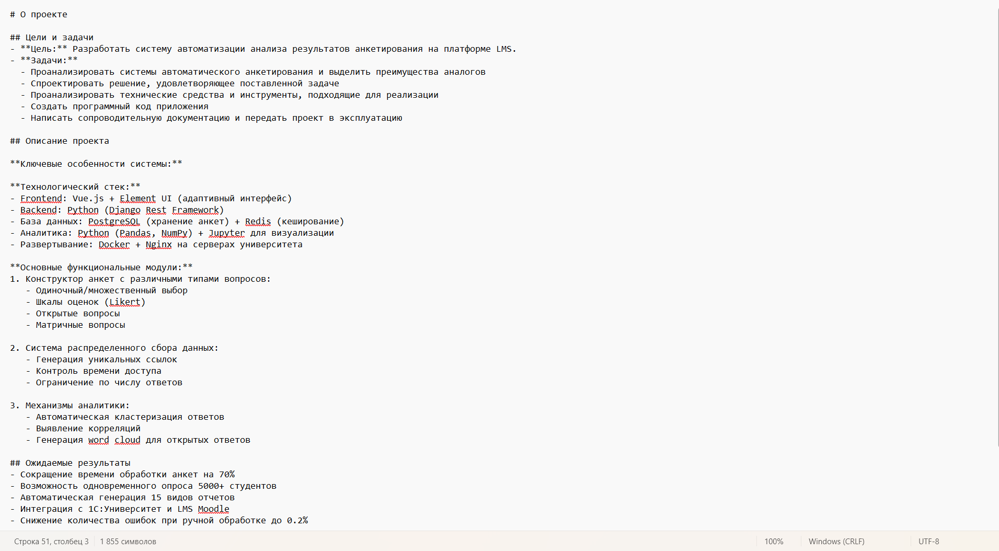
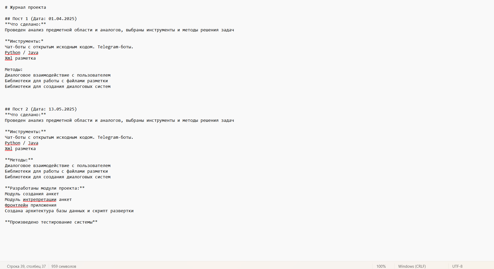
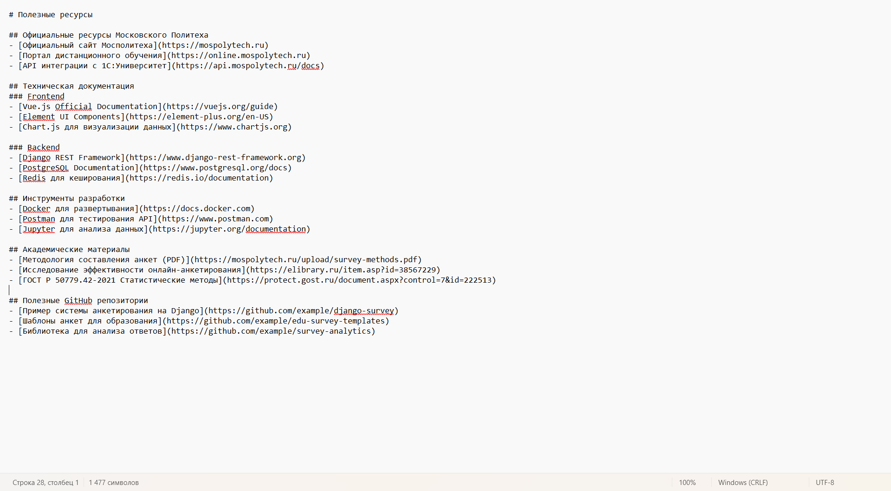

Журнал

Архитектура кода

Создана архитектура базы данных для проекта

Написание документации в Markdown





Написание документации в Markdown

Разработан базовый функционал переключения между вкладками на сайте